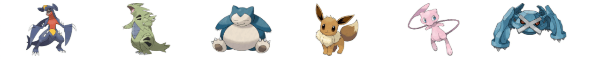

Pour cet exercice nous allons débuter avec un dossier de départ. Il faudra explorer l’arborescence des fichiers afin de repérer où sont situées les images des différents Pokémon et faire en sorte de reproduire la mise en page suivante:
Aperçu du résultat 👇

Matériel
Dossier de départ
Requis
Vous devez vous créer trois balises img et afficher les Pokémon suivant: Garchomp, Tyranitar et Snorlax.
Le code HTML vous permettant d'afficher les 3 derniers Pokémon est déjà réalisé. À partir du fichier main.css, vous devez afficher les images d'arrière-plan des Pokémon suivant: Eevee, Mew et Metagross.
Notes de cours
Chemin de fichiers